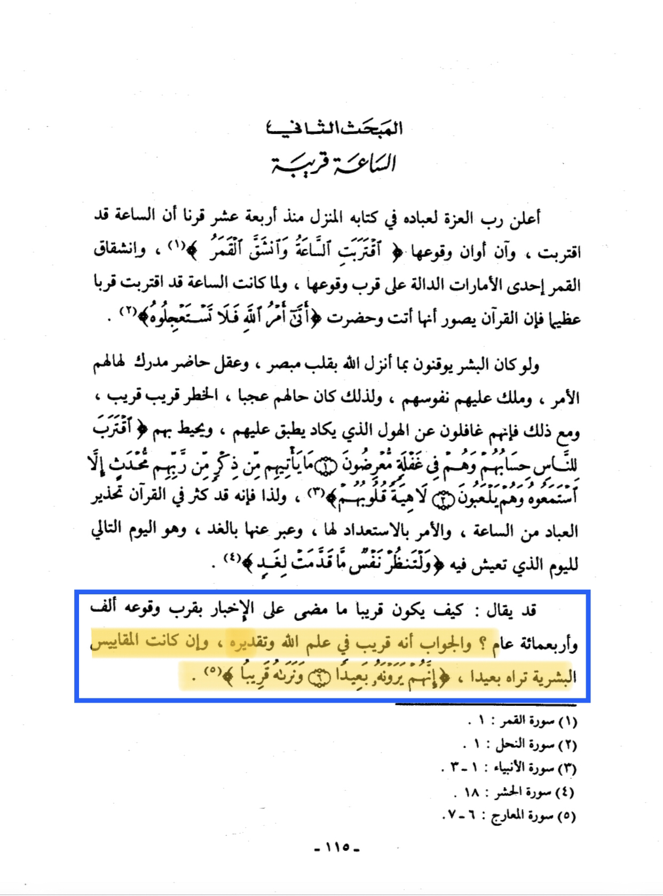

So there are two interpretations by scholars for this hadith the first is that it is meant in the eye of God as Allah
said in the Qūr’ān 70:6-7: “They truly see this ˹Day˺ as impossible but We see it as inevitable.”
This has been mentioned in the book al-quiyamah al-sughra page number (115)

The second interpretation is that there is no prophet after prophet muhammed this opinon is also held by ibn hibban
found in al-ihsan fi takrib Sahih ibn hibban volume 15 page number 13 he states: “ the prophets meaning is that
between him and the doomsday no other other prophet”
And lastly
Surah Al-Mulk (The Sovereignty)
67:26
Say, ‘God alone has knowledge of this: my only duty is to give clear warning.’
67:27
When they see it close at hand, the disbelievers’ faces will be gloomy, and it will be said,
‘This is what you were calling for.’
Translation: Abdul Haleem | Meccan